Mixing Times for Random Walks on Geometric Random GraphsS. Boyd, A. Ghosh, B. Prabhakar, D. Shah (listed in alphabetical order)
SIAM Workshop on Analytic Algorithmics & Combinatorics (ANALCO), Vancouver, January 2005. A geometric random graph, 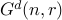, is formed as follows: place 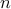 nodes uniformly at random onto the surface of the 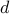-dimensional unit torus and connect nodes which are within a distance 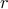 of each other. The has been of great interest due to its success as a model for ad-hoc wireless networks. It is well known that the connectivity of exhibits a threshold property: there exists a constant 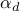 such that for any 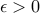, for 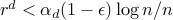, the is not connected with high probability, and for 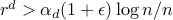, the is connected w.h.p. In this paper, we study mixing properties of random walks on for 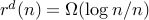. Specifically, we study the scaling of mixing times of the fastest-mixing reversible random walk, and the natural random walk. We find that the mixing time of both of these random walks have the same scaling laws and scale proportional to 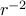 (for all ). These results hold for when distance is defined using any 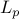 norm. Though the results of this paper are not so surprising, they are nontrivial and require new methods. To obtain the scaling law for the fastest-mixing reversible random walk, we first explicitly characterize the fastest-mixing reversible random walk on a regular (grid-type) graph in dimensions. We subsequently use this to bound the mixing time of the fastest-mixing random walk on . In the course of our analysis, we obtain a tight relation between the mixing time of the fastest-mixing symmetric random walk and the fastest-mixing reversible random walk with a specified equilibrium distribution on an arbitrary graph. To study the natural random walk, we first generalize a method of Diaconis and Stroock (1991) to bound eigenvalues based on Poincare's inequality and then apply it to the graph. |